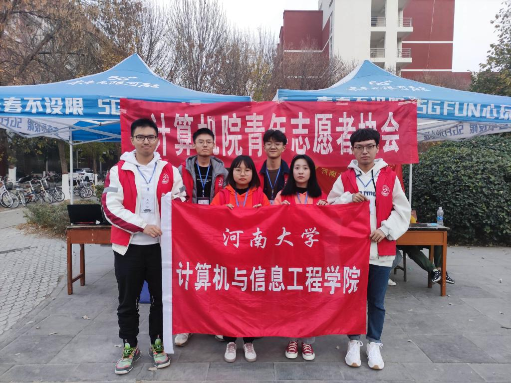
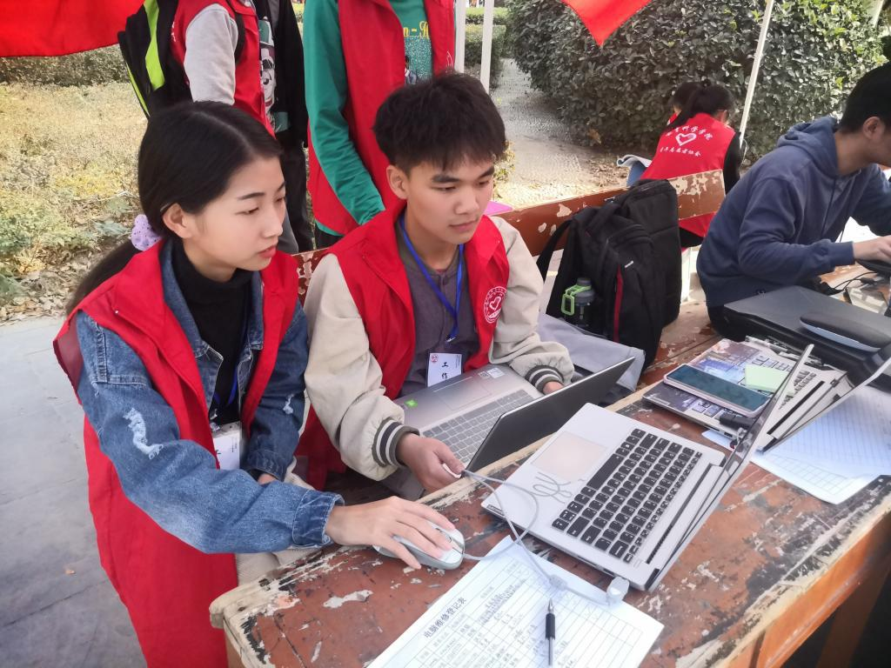

The activity of "Free clinic of computers, warm up the winter" held by the Youth Association of The School of Computer and Information Engineering
Date: 16,Nov,2020 Author: Yang Jingwen
Photography: Li Jialu,TangChengyao


On November 14 to 15, sponsored by the computer and information engineering institute youth corps committee, undertaken by the youth volunteer association of computer and information engineering school, joined with the youth volunteer associations of the education science school and the journalism and communication school, the free computer clinic activity is held in Nanyuan campus canteen， Beiyuan dormitory of JinMing campus, and the center canteen of MingLun campus at the same time, the volunteers used their knowledge of computer technology, to solve the problem of computer software, and to help the students learn more knowledge about their computers.
Before the start of the activity, the youth Volunteers Association of our school conducted two days of online and offline publicity from November 12th to 13th. The volunteers patiently introduced the details of the activity to the students and guided them to do the preparation work before the free clinic of computer. When the computer free diagnosis activity was held, the volunteers who has went through the system training were able to correctly use their professional knowledge to help students solve such problems as system installation and reinstallation, office software installation, maintenance of common computer faults, computer system and disk optimization, etc. In the end, the volunteers won the recognition and trust of their classmates with their enthusiasm and responsibility.
From the volunteers' earnest and meticulous publicity in the early stage and their meticulous free diagnosis in the later stage, we can see the vigor and vitality of these young volunteers. The volunteers were also delighted to be able to solve the problems of the others. Practice in warmth, find warmth in practice!